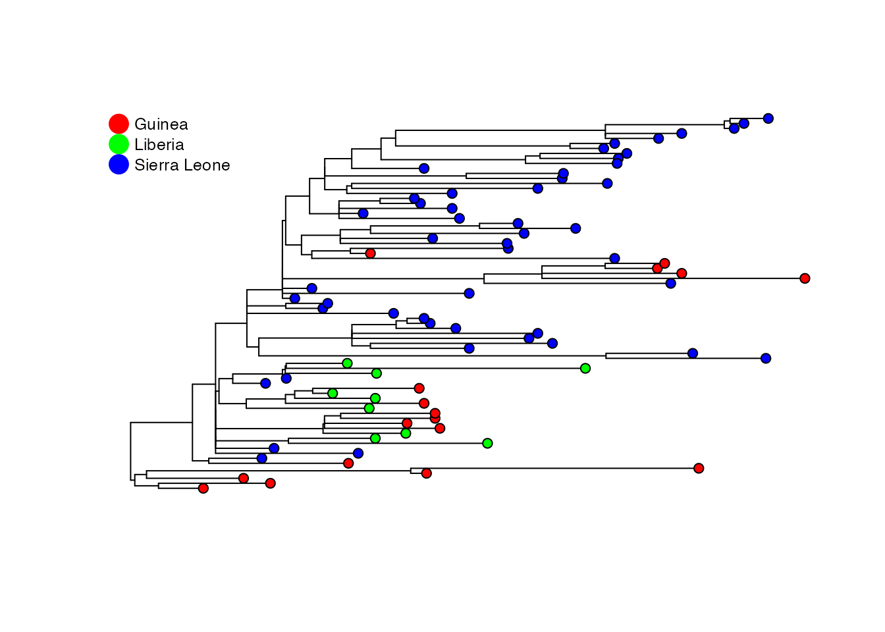

Sampling-Aware Ancestral State Inference
Yexuan Song, Caroline Colijn
2026-03-04
Source:vignettes/saasi-tutorial.Rmd
saasi-tutorial.RmdIntroduction
This vignette demonstrates how to use the saasi package
for ancestral state reconstruction.
SAASI (Sampling-Aware Ancestral State Inference) is an ancestral state reconstruction method that accounts for variation in sampling rates among locations or traits.
Unlike traditional methods that assume uniform sampling, SAASI explicitly models heterogeneous sampling, leading to ancestral state estimates that take sampling into account.
SAASI is described in Song et al. https://www.biorxiv.org/content/10.1101/2025.05.20.655151v2.
Installation
You can install the development version of saasi from GitHub with:
# install.packages("remotes")
remotes::install_github("MAGPIE-SFU/saasi")Overview
The saasi function requires three main inputs:
-
A phylogenetic tree (class
phylo) that is:- Rooted and binary
- Has branch lengths in units of time (all positive)
- Contains tip states (
tree$tip.state) with no missing values
SAASI has the function
prepare_tree_for_saasi()which can ensure that these conditions are met. -
Transition rate matrix Q (class
matrix):- Rates of transition between states
Use
estimate_transition_rates()to estimate this matrix. -
Birth-death-sampling parameters (class
data.frame):- Speciation rate
- Extinction/removal rate
- Sampling rate
Use
estimate_bds_parameters()to estimate the speciation rate and a single, overall sampling rate. The “extinction rate” (in the language of birth-death models) in infectious disease applications is the inverse of the duration of infectiousness, i.e. the rate of leaving the infectious class.
The output is a data frame containing the probability of each state for each internal node of the phylogenetic tree.
Example: Ebola 2013-2016 West African Ebola Epidemic
Read tree and load metadata
For this example, we use data from Nextstrain [@hadfield2018nextstrain,sagulenko2018treetime]: https://nextstrain.org/ebola/ebov-2013?c=country.
tree <- ape::read.tree(system.file("extdata", "nexstrain_ebola_ebov-2013_smaller.nwk", package = "saasi"))
metadata <- readr::read_tsv(system.file("extdata", "nextstrain_ebola_ebov-2013_metadata.tsv", package = "saasi"))
#> Rows: 1493 Columns: 8
#> ── Column specification ────────────────────────────────────────────────────────
#> Delimiter: "\t"
#> chr (7): strain, country, division, author, author__url, accession, accessi...
#> date (1): date
#>
#> ℹ Use `spec()` to retrieve the full column specification for this data.
#> ℹ Specify the column types or set `show_col_types = FALSE` to quiet this message.First, create a data frame containing strains and states. The first
column of the data frame should match tree$tip.label, and
the second column should contain the state of interest. Users can skip
this step if tree$tip.state already exists.
tip_data <- data.frame(
tip_label = metadata$strain,
state = metadata$country
)Modify the tree to be compatible with saasi
Users can apply the function prepare_tree_for_saasi() to
make the tree compatible with saasi. To check if the tree is compatible,
use the function check_tree_compatibility(). Here, the
function will include the tip states (i.e. their location) in the tree
as
ebola_tree <- prepare_tree_for_saasi(tree, tip_data)This tree is a downsampled version of the 2013 Ebola virus tree from nextstrain. There are 193 tips from three countries.
plot_saasi(ebola_tree, saasi_result = NULL,tip_cex = 1) 
Estimating transition rates
Users can estimate the transition rate matrix Q using the function
estimate_transition_rates(). Users can specify the model
for the transition rate matrix: 1. Equal rate ER, 2.
Symmetric rate SYM, 3. All rates different
ARD, and or a custom structure for the matrix.
Q <- estimate_transition_rates(ebola_tree, method = 'fitMk', matrix_structure = 'SYM')Estimating speciation and sampling rates
Users can estimate speciation and sampling rates using the function
estimate_bds_parameters(). In infectious disease
applications, users should have some knowledge about the expected
removal rate
()
for the disease of interest, as saasi requires the extinction rate as an
input (to overcome identifiability limitations). To obtain estimates for
the overall speciation and sampling rates, users should have knowledge
about the maximum and minimum R0, as well as the upper and lower bounds
for the total removal rate
.
For Ebola, we assume the total infectious period is between 20 and 40 days. Converting to years, the total removal rate () is between 9.125 (365/40) and 18.25 (365/20). If we assume , this gives us bounds for the overall sampling rate between 4.125 and 13.25. In this example, we assume R0 is between 1.5 and 3.
rates <- estimate_bds_parameters(
ebola_tree,
mu = 5,
r0_max = 3,
r0_min = 1.5,
psi_max = 15,
infectious_period_min = 20/365, # convert days to years
infectious_period_max = 40/365, # convert days to years
n_starts = 100)Now we set the state-specific sampling and pass the parameters to SAASI. Our overall sampling rate has been estimated (so as to be comparable with and ); SAASI allows us to account for state-specific relative sampling.
Suppose, for example, that Liberia was known to have sequenced a smaller fraction of the cases than the other states, by a factor of 2.
Setting up input parameters
pars = data.frame(state = colnames(Q), lambda=rates$lambda, mu = rates$mu, psi= rates$psi, row.names = NULL)
pars[(pars$state=="Liberia"),"psi"] = pars[(pars$state=="Liberia"), "psi"]/2 # set sampling rate to be 1/2 the baselineRun saasi analysis
saasi_ebola <- saasi(ebola_tree, Q, pars)
#> Tree is compatible with SAASIPlot and save the result
Users can use the built-in function plot_saasi() to
visualize results.
p1 <- plot_saasi(ebola_tree, saasi_ebola, tip_cex = 1, node_cex=0.3)
Compare to equal sampling
If all states had comparable sampling we would obtain a different ancestral state reconstruction:
pars = data.frame(state = colnames(Q), lambda=rates$lambda, mu = rates$mu, psi= rates$psi, row.names = NULL)
saasi_ebola2 <- saasi(ebola_tree, Q, pars)
#> Tree is compatible with SAASI
p2 <- plot_saasi(ebola_tree, saasi_ebola2, tip_cex = 1, node_cex=0.3)
Interpreting results
The saasi() function returns a data frame with
probability distributions over states for each internal node. Higher
probabilities indicate greater confidence in that ancestral state. In
this example, if we assume that Liberia has sampled at a lower rate than
the other two countries, we see more internal nodes inferred to be in
Liberia than if its sampling is the same as the other locations. This is
because SAASI accounts for undetected cases in Liberia.
Note that Liberia and the factor of 2 are chosen entirely at random for the purposes of this vignette and do not represent any knowledge or opinion of the authors about the relative sampling during this outbreak.